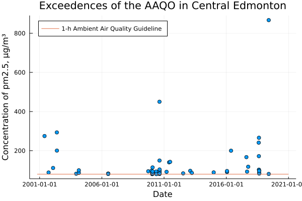
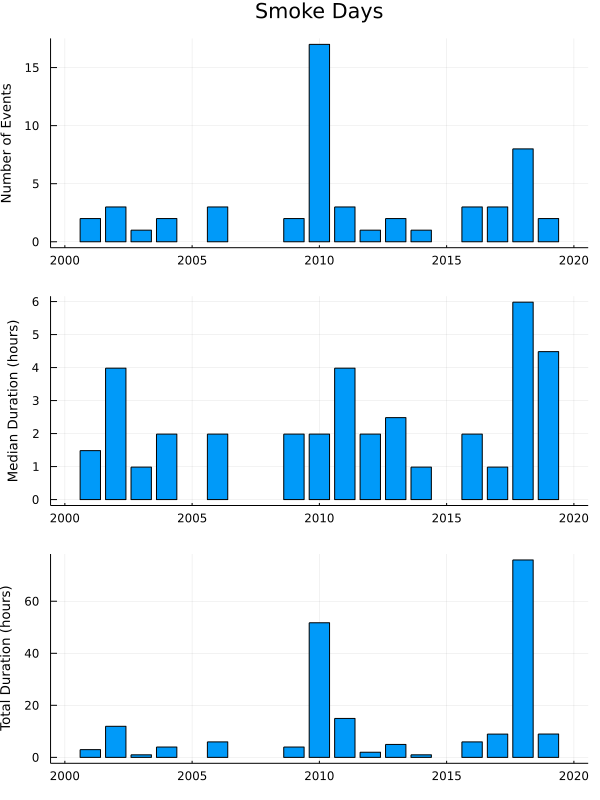
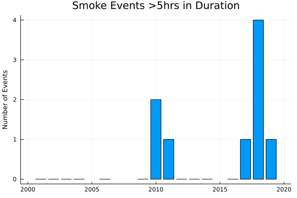
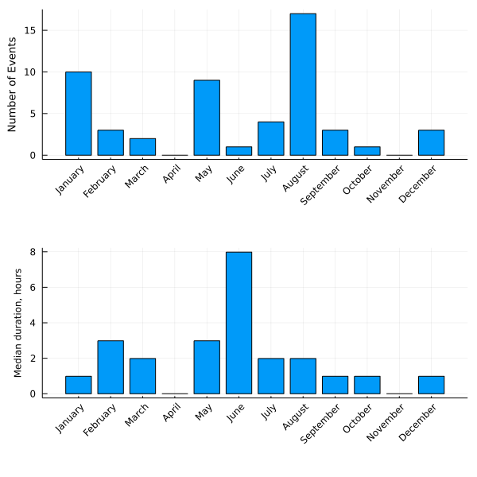
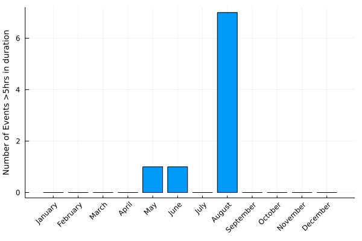

using CSV, DataFrames, Dates, Pipe, PlotsRecently wildfire smoke has returned and blanketed the city in haze, causing the air quality health index (AQHI) to sky rocket, and as a result I’ve been spending a lot more time inside. This feels like it is a lot more common event than it used to be, but I’m not sure if that’s true or if it merely feels true because I’m looking out at a hazy skyline.
I would like to look into this more using air quality data and see if this truly is a recent change, or maybe Edmonton has always been like this and I’ve simply forgotten.
Particulates as a proxy
Alberta has a series of air quality monitoring stations set up around the province and I can pull a data-set from the Edmonton Central station (the closest one to me) and look at airborne particulates (pm2.5) as a proxy for wildfire smoke. Though the smoke itself is more than just particulates <2.5μm in diameter, it is those particulates that cause the AQHI to rise significantly.
However there are more sources of pm2.5 than just wildfires, vehicles are a major source for one, and in the winter atmospheric inversions can lead to really poor air quality during which time the pm2.5 concentration rises. Additionally farmers around the city often burn stubble and other stuff in the fall, leading to smoke days that have nothing to do with wildfires.
So this is a proxy for wildfire smoke, but not a great one.
Ambient Air Data
I downloaded just the pm2.5 measurements for Edmonton Central from October 2000, the earliest reported values, through to the end of December 2020, the latest values in the database at this time, from Alberta’s Ambient Air Data Warehouse. This is a csv with 177,072 rows of data and several columns each corresponding to, I’m guessing, a different instrument. Over time the station has swapped out instruments for measuring pm2.5s and those are recorded as a different measurement type.
data_file = "data/Long Term pm2.5 Edmonton Central.csv"
ambient_data = @pipe data_file |>
CSV.File( _ ;
dateformat="mm/dd/yyyy HH:MM:SS",
types=[DateTime, DateTime, Float64, Float64, Float64, Float64],
header=16, silencewarnings=true) |>
DataFrame(_);177072×6 DataFrame 6×6 DataFrame Row │ IntervalStart IntervalEnd MeasurementValue MeasurementValue_1 MeasurementValue_2 MeasurementValue_3 │ DateTime DateTime Float64? Float64? Float64? Float64? ─────┼──────────────────────────────────────────────────────────────────────────────────────────────────────────────────────── 1 │ 2000-10-20T00:00:00 2000-10-20T00:59:00 missing missing missing 2.3 2 │ 2000-10-20T01:00:00 2000-10-20T01:59:00 missing missing missing 1.8 3 │ 2000-10-20T02:00:00 2000-10-20T02:59:00 missing missing missing 1.8 4 │ 2000-10-20T03:00:00 2000-10-20T03:59:00 missing missing missing 1.0 5 │ 2000-10-20T04:00:00 2000-10-20T04:59:00 missing missing missing 1.8 6 │ 2000-10-20T05:00:00 2000-10-20T05:59:00 missing missing missing 2.0
Parsing the Data
What I want to know is when smoke events happened and how long they were. To estimate that I am going to assume a smoke event is a period in which the hourly pm2.5 exceed the ambient air quality guideline for pm2.5s. The event starts at the first hour greater than that limit and ends on the first hour less than that limit. This has the obvious weakness that sometimes the clouds of wildfire smoke has breaks in it, so what feels like a week long smoke event would end up as a series of smaller events as the pm2.5 count might dip overnight or something. But this is a start.
One complication is that the dataset has four columns of pm2.5 data that are full of mostly missing values since they each only correspond to the period in which the given instrument is running. So I first need to collect those measurement values, drop the missing values, and take the mean of what remains. I assume there is no overlap and so it’s the mean of one number, but I haven’t checked to see if that’s true and the mean seems like the most sensible thing to do if there is overlap.
If there is a missing hour entirely, i.e. no instrument has a reading, then I skip it. That neither counts as the start nor the end of a smoke event and I move to the next row.
using Statistics
lim_1h = 80.0 #μg/m³ 1-hr limit
lim_24h = 29.0 #μg/m³ 24-hr limit
function exceedences(df; limit=lim_1h)
results = DataFrame(start_date = DateTime[], end_date = DateTime[], month = Int64[], year = Int64[], duration = Float64[], max_conc = Float64[])
flag = false
start_date = nothing
end_date = nothing
max_conc = 0.0
for r in eachrow(ambient_data)
measurements = [r[:MeasurementValue], r[:MeasurementValue_1], r[:MeasurementValue_2], r[:MeasurementValue_3]]
measurements = collect( skipmissing(measurements) )
conc = if (sizeof(measurements)>0) mean(measurements) else missing end
if typeof(conc) == Missing
# ignore missing data
elseif conc > limit
if flag == true # we are already in a sequence
end_date = r[:IntervalEnd]
max_conc = max(conc, max_conc)
else # we are starting a sequence
flag = true
start_date = r[:IntervalStart]
end_date = r[:IntervalEnd]
max_conc = max(conc, max_conc)
end
else
if flag == true # we are ending a sequence
flag = false
duration = Dates.value.(end_date - start_date)/3.6e6
push!(results, [start_date, end_date, month(start_date), year(start_date), duration, max_conc])
max_conc = 0.0
end
end
end
return results
endresult_1hr = exceedences(ambient_data, limit=lim_1h)Results: 53×6 DataFrame Summary: 6×7 DataFrame Row │ variable mean min median max ⋯ │ Symbol Union… Any Union… Any ⋯ ─────┼────────────────────────────────────────────────────────────────────────── 1 │ start_date 2001-05-24T11:00:00 2019-05-31T15:00:00 ⋯ 2 │ end_date 2001-05-24T12:59:00 2019-05-31T15:59:00 3 │ month 5.84906 1 7.0 12 4 │ year 2011.15 2001 2010.0 2019 5 │ duration 3.85126 0.983333 1.98333 26.9833 ⋯ 6 │ max_conc 135.9 80.3 93.9 867.0 2 columns omitted
Over the past 20yrs there were 53 periods with the pm2.5 concentration above the limit, these range from 1hr to 27hrs long and a max concentration observed of 867μg/m³
Results
A plot of the results, showing each period in excess of the hourly limit and the duration of that period, is very suggestive that these are becoming more frequent events. If we also plot the maximum hourly concentration observed it appears that the extreme smoke days are a more recent phenomenon. Though with the big caveat that the data only goes back 20 years, it could be that the period between 2000 and 2010 was an abnormally smoke-less period.


The plots below aggregate the events by year, and it certainly seems like smoke events are becoming more frequent and lasting longer, with more time spent in haze than in the early 2000s. But there are notable years such as 2010 and 2018 which could simply be outliers. Interestingly the most notable, in the news, years for wildfires are not obvious ones here – the Slave Lake fire of 2011 and Ft. McMurray fire of 2016. I think it is often the case that the wildfire smoke in Alberta has less to do with fires in Alberta itself and more to do with smoke being carried in from neighbouring states and provinces. That is certainly true now when the major wildfires are in BC, northern Saskatchewan, and northern Manitoba.

One thing these plots may mask is that while the median duration perhaps hasn’t changed much, it’s clear from the scatter plots that the outlier periods are more common in the last decade than the one preceding it.

When grouped by month, we can see winter months have notable representation, which is likely those atmospheric inversions trapping pollutants near ground level, but the summer months appears to be when the hazy periods are longest and that likely corresponds to wildfire smoke.

Filtering out only the extended periods, with a duration >5 hrs, we see that prolonged periods of excess pm2.5 appears to be a summer phenomena, especially August. Which is certainly consistent with my experience of noticeable smokey days, corresponding with wildfire season.

Limitations and Opportunities
An opportunity for further analysis would be to look for correlations between pm2.5 and other pollutants, say NOx, to allow one to exclude pm2.5s from vehicle emissions. That would still leave road dust, construction dust, and just farmers burning stubble, but I imagine that would go pretty far in terms of removing unrelated bad air quality days from the dataset. If one was only concerned with the most extreme cases, when the sky turns orange and visibility drops to only a few blocks, well that’s visible from space and could presumably be pulled out a dataset of satellite images, taking care to distinguish smoke from cloud cover.
I would like to see a longer dataset. The dataset I was looking at was relatively short, only twenty years, which doesn’t allow me to answer the question of whether or not extended periods of wildfire smoke is truly a recent phenomenon versus a “return to normal”, i.e. it could be that 2000-2010 were the abnormal years and that is equally consistent with this dataset. Just looking around the air data warehouse it doesn’t look like this kind of air analysis was routine before the 2000s, but I could simply be ignorant of some other studies or datasets.
Finally I picked pm2.5s since that is the variable responsible for the high risk AQHI levels, but there could be much better proxies for wildfire smoke that have better datasets. I can’t think of anything off the top of my head, but I’m a chemical engineer not an air quality expert.